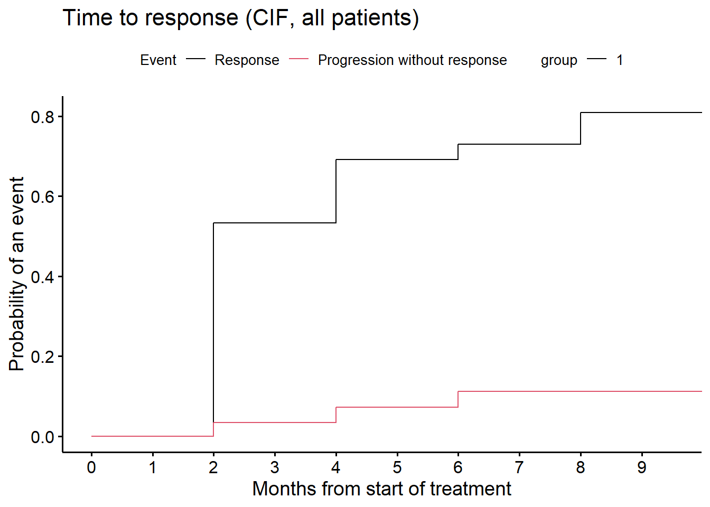

# --------------------------------------------------------------
# Packages
# --------------------------------------------------------------
packages <- c("gtsummary", "survival", "cmprsk", "survminer", "msm",
"mstate", "tidyverse", "gt", "survRM2", "PBIR",
"labelled", "swimplot", "ggplot2")
for (i in 1:length(packages)){library(packages[i], character.only = TRUE)}Duration of and time to response in oncology clinical trials from the perspective of the estimand framework
Code accompanying the paper: Case Study in Mantle Cell Lymphoma
1 Background
Code to illustrate Mantle Cell Lymphoma case study in Section 4 of the paper Weber et al. (2023) written by the duration of response task force of the oncology estimand WG.
2 Purpose of this document
This R markdown file provides easy accessible code to reproduce computations in the paper. The github repository where this document is hosted is available here.
3 Setup
3.1 Packages
3.2 2.2 Get data
The source data provide the response status at time points \(C_2, \ldots, C_{22}\). The data set has no deaths. For assessing time to response (TTR), duration of response (DOR), or overall response rate (ORR) deaths are handled in the same way as progression. The dataset also has no data on intercurrent events such as e.g. start of new therapy. Thus, we assume none occurred. A treatment cycle has 28 days.
# --------------------------------------------------------------
# Data
# --------------------------------------------------------------
dat <- read_csv("dor.csv", show_col_types = FALSE)
gt(dat) %>%
tab_header(title = "Listing: Responses by cycle") %>%
tab_style(
style = list(cell_text(weight = "bold")),
locations = cells_title()) %>%
tab_style(
style = list(cell_text(weight = "bold")),
locations = cells_column_labels())| Listing: Responses by cycle | |||||||||
| ID | C2 | C4 | C6 | C8 | C10 | C13 | C16 | C19 | C22 |
|---|---|---|---|---|---|---|---|---|---|
| 1 | SD | NA | NA | NA | NA | NA | NA | NA | NA |
| 2 | SD | PD | NA | NA | NA | NA | NA | NA | NA |
| 3 | SD | SD | PD | NA | NA | NA | NA | NA | NA |
| 4 | SD | PR | CR | CR | CR | CR | CR | CR | CR |
| 5 | PR | PR | CR | CR | CR | CR | CR | CR | CR |
| 6 | SD | SD | SD | SD | SD | NA | NA | NA | NA |
| 7 | PR | PR | CR | CR | CR | CR | CR | CR | NA |
| 8 | SD | SD | SD | PR | PR | PR | PR | PD | NA |
| 9 | SD | SD | PR | PR | PR | PR | PR | NA | NA |
| 10 | PR | PD | NA | NA | NA | NA | NA | NA | NA |
| 11 | PR | PR | CR | CR | CR | CR | CR | NA | NA |
| 12 | SD | PR | PR | CR | CR | CR | CR | NA | NA |
| 13 | SD | NA | NA | NA | NA | NA | NA | NA | NA |
| 14 | PR | CR | CR | CR | CR | CR | CR | CR | NA |
| 15 | CR | CR | NA | NA | NA | NA | NA | NA | NA |
| 16 | SD | PR | PR | CR | CR | CR | CR | CR | NA |
| 17 | PR | PR | PD | NA | NA | NA | NA | NA | NA |
| 18 | PR | PR | PR | PR | PR | PR | PR | PR | NA |
| 19 | PD | NA | NA | NA | NA | NA | NA | NA | NA |
| 20 | SD | SD | SD | CR | CR | CR | CR | CR | NA |
| 21 | SD | PR | CR | NA | NA | NA | NA | NA | NA |
| 22 | SD | SD | SD | SD | SD | NA | NA | NA | NA |
| 23 | PR | PR | PR | PR | PR | PR | PR | PR | NA |
| 24 | PR | PR | PR | PR | PR | PR | PR | PR | NA |
| 25 | PR | PR | PR | CR | CR | CR | CR | CR | NA |
| 26 | CR | CR | PD | NA | NA | NA | NA | NA | NA |
| 27 | PR | PR | CR | CR | CR | CR | CR | NA | NA |
| 30 | PR | PR | PR | PR | PR | PR | PR | NA | NA |
| 31 | PR | PR | PR | PR | CR | CR | CR | NA | NA |
| 32 | PR | PR | CR | CR | NA | NA | NA | NA | NA |
3.3 Data preparation
# --------------------------------------------------------------
# Data preparation
# --------------------------------------------------------------
# Don't need Patient ID column
data <- dat[, -1]
# Time of assessment in Cycles, Days, Months
cycles <- as.numeric(sub('.', '', colnames(data)))
# cycle duration in days
cycle.duration <- 28
days <- function(x){
x * cycle.duration
}
days.per.month <- 365.25 / 12
months <- function(x){
days(x) / days.per.month
}
n <- dim(data)[1]3.4 Endpoint derivations
Endpoint derivations below work for
- complete data,
- with no missing assessments prior to last assessment,
- no assessments after progression and
- all patients have at least 1 assessment before drop-out/death.
This is the case with the data set in the case study.
# --------------------------------------------------------------
# Endpoint derivations
# --------------------------------------------------------------
# Pick the best response by patient
BOR <- function(x){
# x: data matrix
if(any(x == "CR", na.rm = TRUE)){out <- "CR"}
else{
if(any(x == "PR", na.rm = TRUE)){out <- "PR"}
else{
if(any(x == "SD", na.rm = TRUE)){out <- "SD"}
else{
out<-"PD"
}
}
}
}
bor <- apply(data, 1, BOR)
# Best overall response is CR or PR
OR <- function(x){
# x: BOR vector
ifelse(x == "CR" | x == "PR", TRUE, FALSE)
}
or <- OR(bor)
# Any assessment with PD?
Any.PD <- function(x){
# x: data matrix
ifelse(any(x == "PD",na.rm = TRUE), TRUE, FALSE)
}
any.pd <- apply(data, 1, Any.PD)
# OR and an assessment with PD?
or.pd <- ifelse(or == TRUE & any.pd, TRUE, FALSE)
# No OR but an assessment with PD?
noor.pd <- ifelse(or == FALSE & any.pd, TRUE, FALSE)
# No OR or an assessment with PD?
noor.orpd <- ifelse(or == FALSE | any.pd, TRUE, FALSE)
# Last assessment in study (cycle number)
last <- numeric(n)
for(i in 1:n){
last[i] <- cycles[length(data[i, which(!is.na(data[i, ]))]) ]
}
# TTR: Time to response.
# - For patients with OR use date of first assessment
# with OR (response event)
# - For patients with no OR nor PD use last assessment
# (censored, could get response if further assessments taken).
# - For patients with no OR and a PD use last assessment
# (censored, competing risk PD).
ttr <- numeric(n)
for(i in 1:n){
if(or[i]){
ttr[i] <- cycles[min(which(data[i, ] %in% c("CR", "PR")))] }
else{
ttr[i] <- last[i]}
}
# DOR: Duration of response
# For patients with no response: 0
# For patients with response and no PD: Date of last assessment -
# Date of response (censored).
# For patients with response and PD:
# Date of last assessment - Date of response (event)
dor <- ifelse(or, last - ttr, 0)
# For time in response: status
tir.status <- ifelse(noor.orpd, 1, 0)
tir.status <- ifelse(or.pd, 1, tir.status)
# For competing risks: TTR status 1 = OR, 2 = no OR but PD,
# 0 = no OR, no PD
ttr.status <- ifelse(or, 1, 0)
ttr.status[!or & noor.pd] <- 2
# TTP: Time to progression (equivalent to PFS in this dataset)
# For patients with PD based on PD assessment date (= event)
# For patients without PD based on last assessment date (= censored)
# Note that in this data set, if PD occurs, it is at the
# last assessment date.
# Note that in this data set there are no deaths.
# Therefore in this data set, ttp = pfs = last assessment
ttp.status <- ifelse(any.pd, 1, 0)
ttp <- last
# Use last observed follow-up as date of TTR if progression
# (Table 3, estimand 2)
sttr <- ifelse(any.pd == 1 & or == 0, max(ttp), ttr)
# TTP censored at response
# For patients with OR: response date
# For all other patients: last
ttp.cens <- ifelse(or, ttr, last)
data.ext <- cbind(dat, bor, or, any.pd, or.pd, noor.pd,
noor.orpd, last, ttr, sttr, dor, ttp,
ttp.status, ttp.cens, tir.status)4 BOR and ORR
Consider any best response of PR or CR.
# --------------------------------------------------------------
# Best overall response
# --------------------------------------------------------------
rr <- data.ext %>%
select(or)
r <- rr %>%
tbl_summary(label = or ~ "Best overall response",
digits = list(all_categorical() ~ c(0, 1)))
as_gt(r)| Characteristic | N = 301 |
|---|---|
| Best overall response | 23 (76.7%) |
| 1 n (%) | |
5 Duration of response
5.1 Conditional cDOR (KM analysis, responders only)
# --------------------------------------------------------------
# Conditional duration of response
# --------------------------------------------------------------
# responders only
data.lim <- subset(data.ext, or == TRUE)
# or.pd = event indicator, TRUE (1) = event
fit_cDOR <- survfit(Surv(months(dor), or.pd) ~ 1, data = data.lim)
# Figure 2
ggsurvplot(fit_cDOR, data = data.lim, risk.table = TRUE, conf.int = F,
title = "Conditional duration of Response (responders only)",
submain = "Kaplan-Meier estimates",
break.x.by = 3,
ylab = "Prob(progression or death)",
xlab = "Months from start of treatment",
legend.title = "")# Table 4, row 1
as_gt(tbl_survfit(fit_cDOR, times = months(c(6, 9, 12))))| Characteristic | Time 5.51950718685832 | Time 8.27926078028747 | Time 11.0390143737166 |
|---|---|---|---|
| Overall | 86% (73%, 100%) | 86% (73%, 100%) | 81% (65%, 100%) |
5.2 Time in response (EMA definition, all patients)
# --------------------------------------------------------------
# Time in response (all patients): EMA definition
# --------------------------------------------------------------
# tir.status = event indicator, TRUE (1) = event
fit_DOR <- survfit(Surv(months(dor), tir.status) ~ 1, data = data.ext)
ggsurvplot(fit_DOR, data = data.ext, risk.table = TRUE, conf.int = F,
title = "Time in Response (EMA definition, all patients)",
submain = "Kaplan-Meier estimates",
break.x.by = 3,
xlab = "Months from start of treatment",
legend.title = "")# Table 4, row 2
as_gt(tbl_survfit(fit_DOR, times = months(c(6, 9, 12))))| Characteristic | Time 5.51950718685832 | Time 8.27926078028747 | Time 11.0390143737166 |
|---|---|---|---|
| Overall | 66% (51%, 86%) | 66% (51%, 86%) | 62% (46%, 83%) |
5.3 Probability of being in response (all patients)
# --------------------------------------------------------------
# Probability of being in response [months] (PBIR package)
# --------------------------------------------------------------
fit_PBIR<-PBIR1(t2PROGRESSION = months(data.ext$ttp),
STATUS_PROGRESSION = data.ext$any.pd,
t2RESPONSE = months(data.ext$ttr),
STATUS_RESPONSE = data.ext$or,
time = months(c(1:10)))
# Table 4, row 3
fit_PBIR %>%
gt() %>%
fmt_number(decimals = 2, columns = c(time, PBIR, std, ci.low, ci.up)) %>%
tab_style(
style = list(cell_text(weight = "bold")),
locations = cells_column_labels())| time | PBIR | std | ci.low | ci.up |
|---|---|---|---|---|
| 0.92 | 0.00 | 0.00 | 0.00 | 0.00 |
| 1.84 | 0.53 | 0.05 | 0.44 | 0.62 |
| 2.76 | 0.53 | 0.05 | 0.44 | 0.62 |
| 3.68 | 0.66 | 0.06 | 0.53 | 0.77 |
| 4.60 | 0.66 | 0.06 | 0.53 | 0.77 |
| 5.52 | 0.63 | 0.07 | 0.48 | 0.75 |
| 6.44 | 0.63 | 0.07 | 0.48 | 0.75 |
| 7.36 | 0.70 | 0.07 | 0.55 | 0.82 |
| 8.28 | 0.70 | 0.07 | 0.55 | 0.82 |
| 9.20 | 0.70 | 0.07 | 0.55 | 0.82 |
fit_PBIR_pl<-PBIR1(t2PROGRESSION = months(data.ext$ttp),
STATUS_PROGRESSION = data.ext$or.pd ,
t2RESPONSE = months(data.ext$ttr),
STATUS_RESPONSE = data.ext$or)
tt <- fit_PBIR_pl$time
diff <- fit_PBIR_pl$PBIR
B <- length(tt) + 1
tt <- c(0, tt)
diff <- c(0, diff)
tt <- rep(tt, rep(2, B))[-1]
diff <- rep(diff, rep(2, B))[-(2 * B)]
plot(range(c(0, max(tt))), range(c(0, 1)),
xlab = "Months from start of treatment", ylab = "PBIR",
lwd = 2, type = "n", main = "Probability of being in response (PIBR)")
lines(tt, diff, lwd = 2, col = 3)5.4 Mean duration of response (all patients)
# --------------------------------------------------------------
# Mean duration of response [months] (PBIR package)
# --------------------------------------------------------------
# Table 4, row 4
mduration(t2PROGRESSION = months(data.ext$ttp),
STATUS_PROGRESSION = data.ext$any.pd,
t2RESPONSE = months(data.ext$ttr),
STATUS_RESPONSE = data.ext$or)$meandor.est
[1] 4.640113
$meandor.se
[1] 0.3965897
$time.truncation
[1] 9.1991796 Time to Response
6.1 cTTR (responders only, KM analysis)
# --------------------------------------------------------------
# Conditional TTR
# --------------------------------------------------------------
data.res <- subset(data.ext, data.ext$or == 1)
# or = event indicator, TRUE (1) = event
fit_cTTR <- survfit(Surv(months(data.res$ttr), data.res$or) ~ 1,
data = data.res)
# Table 5, row 5
surv_median(fit_cTTR) strata median lower upper
1 All 1.839836 1.839836 3.679671# Table 5, row 6
surv_summary(fit_cTTR) time n.risk n.event n.censor surv std.err upper lower
1 1.839836 23 16 0 0.30434783 0.3152442 0.5645553 0.16407178
2 3.679671 7 4 0 0.13043478 0.5383819 0.3746838 0.04540691
3 5.519507 3 1 0 0.08695652 0.6756639 0.3269101 0.02313002
4 7.359343 2 2 0 0.00000000 Inf NA NA# KM plot cTTR (Figure 3)
ggsurvplot(fit_cTTR, data = data.res,
risk.table = TRUE,
conf.int = FALSE,
surv.median.line = "h",
main = "Time to Response", submain = "Kaplan-Meier estimates",
xlim = c(0, 10),
break.x.by = 1, ylab = "Prob(achieving response)",
xlab = "Months from start of treatment",
legend.title = "") 
6.2 cTTR censoring at last patient last visit (KM analysis)
For this analysis we set the censoring date to the maximum follow-up date observed in the study for patients with progression prior to achieving response.
# --------------------------------------------------------------
# Alternative time to response
# --------------------------------------------------------------
# or = event indicator, TRUE (1) = event
fit_cTTR_TP <- survfit(Surv(months(sttr), or) ~ 1, data = data.ext)
ggsurvplot(fit_cTTR_TP, data = data, risk.table = TRUE,
title = "Time to Response (censor at last visit, responders only)",
conf.int = FALSE, submain = "Kaplan-Meier estimates",
xlab = "Months from start of treatment",
legend.title = "")
# Table 5, row 7
surv_median(fit_cTTR_TP) strata median lower upper
1 All 1.839836 1.839836 7.359343# Table 5, row 8
surv_summary(fit_cTTR_TP) time n.risk n.event n.censor surv std.err upper lower
1 1.839836 30 16 2 0.4666667 0.1951800 0.6841389 0.31832390
2 3.679671 12 4 0 0.3111111 0.2824215 0.5411444 0.17886193
3 5.519507 8 1 0 0.2722222 0.3124405 0.5021962 0.14756174
4 7.359343 7 2 0 0.1944444 0.3933979 0.4203939 0.08993622
5 9.199179 5 0 2 0.1944444 0.3933979 0.4203939 0.08993622
6 20.238193 3 0 3 0.1944444 0.3933979 0.4203939 0.089936226.3 TTR (while-progression free and alive, all patients, competing risks analysis)
Cumulative incidence function (months). In the figure below, event = 1 represents response, event = 2 represents PD without response. We derive the estimate at Month 6 with confidence interval.
# --------------------------------------------------------------
# Cumulative incidence function (cmprsk package)
# --------------------------------------------------------------
# Table 5, row 9
fit_CIF <- cmprsk::cuminc(ftime = months(ttr), fstatus = ttr.status)
z6 <- timepoints(fit_CIF, times = c(6))
z6cil <- z6$est - sqrt(z6$var) * (-qnorm(.025))
z6ciu <- z6$est + sqrt(z6$var) * (-qnorm(.025))
c("response (95% CI):", 1 - round(c(z6$est[1], z6cil[1], z6ciu[1]), 3))[1] "response (95% CI):" "0.27" "0.438"
[4] "0.101" # CIF plot
cif <- ggcompetingrisks(fit_CIF, conf.int = FALSE, multiple_panels = FALSE,
title = "Time to response (CIF, all patients)",
palette = "jco", xlab = "Months from start of treatment")
cif2 <- cif + scale_color_manual(name = "Event", values = c(1, 2),
labels = c("Response",
"Progression without response"))
ggpar(cif2, xlim = c(0, 9.5), xticks.by = 1)
7 6 Swimmer plot
# --------------------------------------------------------------
# Swimmer plot (swimplot package)
# --------------------------------------------------------------
# Figure 4
# Response continues at study end (no progression)
data.ext$cont <- ifelse(data.ext$any.pd == FALSE, data.ext$ttp, NA)
# Progression at study end
data.ext$prog <- ifelse(data.ext$any.pd == TRUE, data.ext$ttp, NA)
data.ext$Progression <- ifelse(data.ext$any.pd == TRUE, "Progression", NA)
follow_p <- swimmer_plot(df = data.ext, id = 'ID', end = 'last', width = .85,
name_fill = 'bor')
resp <- follow_p + swimmer_lines(df_lines = data.ext, id = 'ID',
start = 'ttr', end = 'ttp', size = 1,
col = c("black")) +
swimmer_points(df_points=data.ext, id = 'ID', time = 'prog', size = 2.5,
fill = 'white', col = 'black', name_shape = "Progression") +
scale_y_continuous(name = "Time since start of treatment (cycles)",
breaks = c(0, 2, 4, 6, 8, 10, 13, 16, 19, 22)) +
swimmer_arrows(df_arrows = data.ext, id = 'ID', arrow_start = 'cont',
cont = 'any.pd', type = "open", cex = 1, name_col = 'bor') +
scale_fill_manual(name = "Best overall response",
values = c("CR" = "#4daf4a",
"PR" = "#377eb8",
"SD" = 'orange',
"PD" = '#e41a1c')) +
scale_color_manual(name = "Best overall response",
values = c("CR" = "#4daf4a",
"PR" = "#377eb8",
"SD" = 'orange',
"PD" = '#e41a1c')) +
scale_shape_manual(name = "End of follow-up", values = c(Progression = 21),
breaks = c('Progression')) +
annotate("text", x = 3.5, y = 28.45,
label = "Continued response", size = 3.25) +
annotate("text", x = 2.5, y = 28.25,
label = sprintf('\u2192'), size = 8.25) +
coord_flip(clip = 'off', ylim = c(0, 23))
resp
8 References
Weber, H. J., S. Corson, J. Li, F. Mercier, S. Roychoudhury, M. O. Sailer, S. Sun, A. Todd, and G. Yung. 2023. Duration of and Time to Response in Oncology Clinical Trials from the Perspective of the Estimand Framework. Submitted.